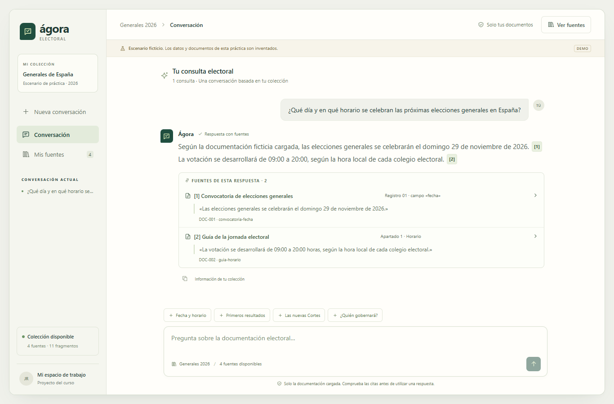
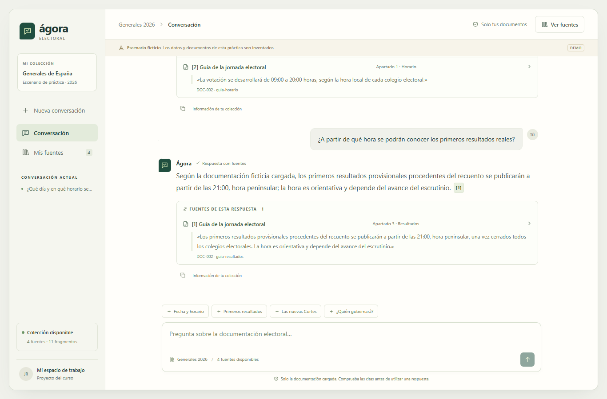
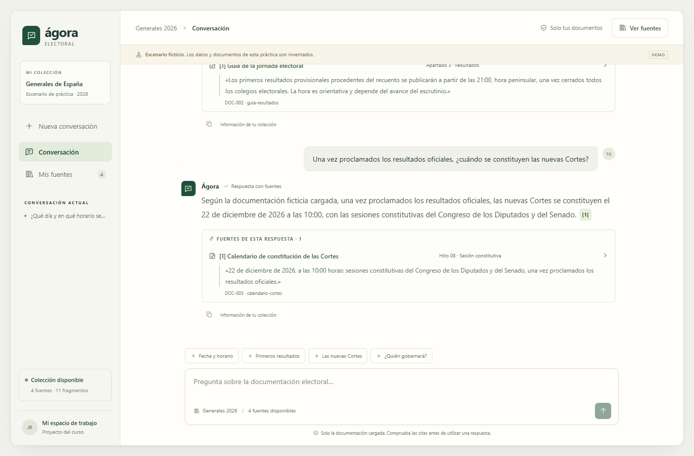
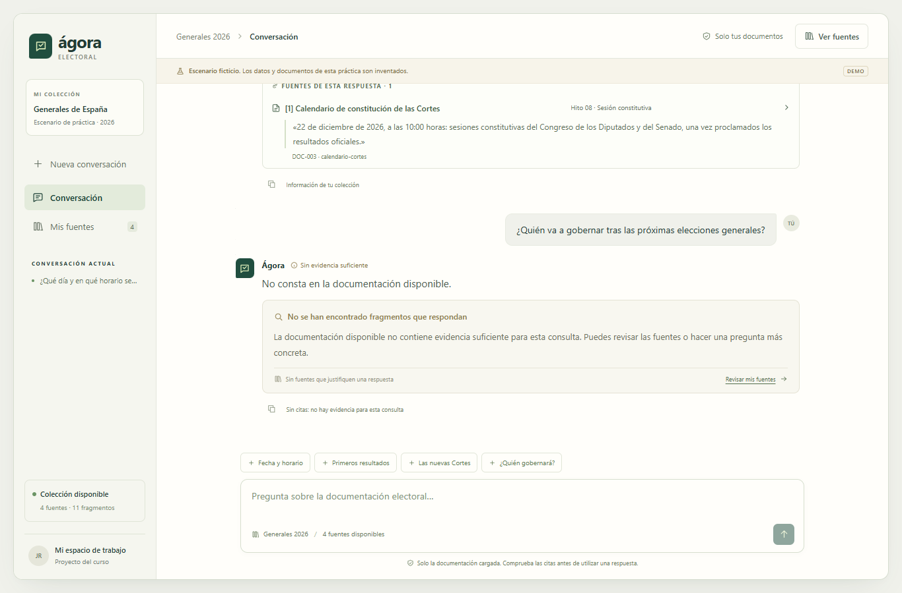
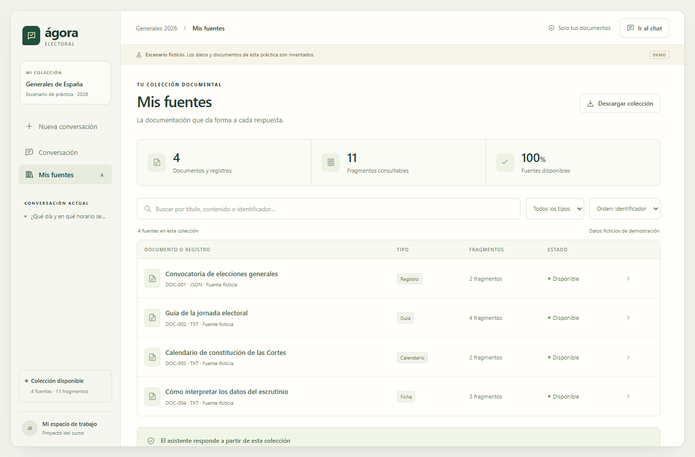

Permite consultar documentación electoral con preguntas en lenguaje natural, sin tener que buscar manualmente en cada documento. Cada respuesta muestra los fragmentos que la justifican y, cuando no encuentra evidencia suficiente, indica que la información no consta.
Escenario ficticio de curso. Las fechas, horarios y documentos de este entregable sirven para demostrar la aplicación. No acreditan una convocatoria electoral real ni proceden de una fuente oficial.
Capturas realizadas el 16/10/2026, 13:14:28, a través de la interfaz local, en una ventana de 1366 × 900 píxeles.
Captura 1 de 5 · Conversación
Fecha y horario de votación

Figura 1. Pregunta enviada desde el chat y respuesta real del servidor, con sus documentos y fragmentos citados debajo.
¿Qué día y en qué horario se celebran las próximas elecciones generales en España?
Resultado: Según la documentación ficticia cargada, las elecciones generales se celebrarán el domingo 29 de noviembre de 2026. [1] La votación se desarrollará de 09:00 a 20:00, según la hora local de cada colegio electoral. [2]
Captura 2 de 5 · Conversación
Primeros resultados del recuento

Figura 2. Pregunta enviada desde el chat y respuesta real del servidor, con sus documentos y fragmentos citados debajo.
¿A partir de qué hora se podrán conocer los primeros resultados reales?
Resultado: Según la documentación ficticia cargada, los primeros resultados provisionales procedentes del recuento se publicarán a partir de las 21:00, hora peninsular; la hora es orientativa y depende del avance del escrutinio. [1]
Captura 3 de 5 · Conversación
Constitución de las nuevas Cortes

Figura 3. Pregunta enviada desde el chat y respuesta real del servidor, con sus documentos y fragmentos citados debajo.
Una vez proclamados los resultados oficiales, ¿cuándo se constituyen las nuevas Cortes?
Resultado: Según la documentación ficticia cargada, una vez proclamados los resultados oficiales, las nuevas Cortes se constituyen el 22 de diciembre de 2026 a las 10:00, con las sesiones constitutivas del Congreso de los Diputados y del Senado. [1]
Captura 4 de 5 · Conversación
Una pregunta sin evidencia

Figura 4. La cuarta pregunta de la misma conversación recibe el aviso de que no consta y no tiene citas. Los fragmentos visibles arriba pertenecen a la respuesta anterior.
¿Quién va a gobernar tras las próximas elecciones generales?
Resultado: No consta en la documentación disponible.
Captura 5 de 5 · Colección documental
Documentos disponibles

Figura 5. La página «Mis fuentes» muestra los cuatro documentos, sus tipos y el número de fragmentos. Incluye búsqueda por contenido, filtro por tipo y ordenación.
El listado procede de GET /api/documentos. Las respuestas se fundamentan en esta colección, que puede abrirse desde la interfaz.
DOC-001 · Convocatoria de elecciones generales · 2 fragmentos
DOC-002 · Guía de la jornada electoral · 4 fragmentos
DOC-003 · Calendario de constitución de las Cortes · 2 fragmentos
DOC-004 · Cómo interpretar los datos del escrutinio · 3 fragmentos
Validación · Consultas 1 y 2
Cómo lo comprobé
El script escribió las preguntas en la interfaz, esperó a la API y comprobó que el texto y las citas aparecieran en pantalla. Cada cita se contrastó literalmente con la colección recibida. Además, se revisó el significado de estas respuestas frente a los fragmentos reproducidos aquí.
1. ¿Qué día y en qué horario se celebran las próximas elecciones generales en España?
Respuesta obtenida: Según la documentación ficticia cargada, las elecciones generales se celebrarán el domingo 29 de noviembre de 2026. [1] La votación se desarrollará de 09:00 a 20:00, según la hora local de cada colegio electoral. [2]
Contraste: Sí. La fecha y las horas coinciden con ambos fragmentos, incluida la referencia a la hora local.
La votación se desarrollará de 09:00 a 20:00 horas, según la hora local de cada colegio electoral.
2. ¿A partir de qué hora se podrán conocer los primeros resultados reales?
Respuesta obtenida: Según la documentación ficticia cargada, los primeros resultados provisionales procedentes del recuento se publicarán a partir de las 21:00, hora peninsular; la hora es orientativa y depende del avance del escrutinio. [1]
Contraste: Sí. Coinciden las 21:00 peninsulares y el carácter provisional y orientativo. No se presentan como resultados oficiales definitivos.
Los primeros resultados provisionales procedentes del recuento se publicarán a partir de las 21:00, hora peninsular, una vez cerrados todos los colegios electorales. La hora es orientativa y depende del avance del escrutinio.
Los enlaces a documentos requieren la aplicación arrancada. También puedes abrir documentos/documentos.json y localizar los identificadores de documento y fragmento indicados.
Validación · Consultas 3 y 4
Cómo lo comprobé
3. Una vez proclamados los resultados oficiales, ¿cuándo se constituyen las nuevas Cortes?
Respuesta obtenida: Según la documentación ficticia cargada, una vez proclamados los resultados oficiales, las nuevas Cortes se constituyen el 22 de diciembre de 2026 a las 10:00, con las sesiones constitutivas del Congreso de los Diputados y del Senado. [1]
Contraste: Sí. Coinciden el 22 de diciembre de 2026 a las 10:00 y las sesiones de ambas Cámaras posteriores a la proclamación oficial.
22 de diciembre de 2026, a las 10:00 horas: sesiones constitutivas del Congreso de los Diputados y del Senado, una vez proclamados los resultados oficiales.
4. ¿Quién va a gobernar tras las próximas elecciones generales?
Respuesta obtenida: No consta en la documentación disponible.
Contraste: La colección no aporta una predicción sobre el futuro Gobierno. La respuesta se abstiene, no cita fuentes y modelo_utilizado es false: no se llamó al generador.
Qué revisar: abre los cuatro documentos de «Mis fuentes» y comprueba que ninguno contiene una predicción de Gobierno. En capturas/resultados.json, la cuarta consulta tiene fuentes: [] y modelo_utilizado: false. Esto acredita la abstención de esta ejecución, no una predicción política.
Los enlaces a documentos requieren la aplicación arrancada. También puedes abrir documentos/documentos.json y localizar los identificadores de documento y fragmento indicados.
Arquitectura y reproducción
Cómo está hecho
Servidor Python y RAG
servidor.py expone una API con FastAPI y Uvicorn. Divide la colección en fragmentos, calcula embeddings con OpenAI y guarda el índice NumPy en data/rag/indice.npz, reutilizándolo mientras no cambien los documentos ni el modelo de embeddings.
Cada pregunta se compara con el índice mediante similitud coseno. El umbral predeterminado es 0,60 y se recuperan hasta ocho fragmentos. Si no hay evidencia similar suficiente, se devuelve «No consta» sin llamar al modelo generativo; sí se calcula el embedding de la consulta.
Con evidencia suficiente, el modelo recibe la pregunta, el historial y los fragmentos recuperados. La salida se valida con un esquema estructurado y las citas se reconstruyen desde la colección. La respuesta contiene texto, fuentes, estado y el indicador de uso del modelo.
Modelos utilizados
Generación: gpt-6-luna. Embeddings: text-embedding-3-small. Son los valores configurados para esta práctica; el servidor permite cambiarlos con OPENAI_MODEL y OPENAI_EMBEDDING_MODEL.
Interfaz y seguridad de la clave
La interfaz usa Svelte, TypeScript y Vite. Solo consume POST /api/preguntar y GET /api/documentos; Vite dirige esas rutas al servidor. La clave se carga desde .env en Python y no se envía al navegador.
Cómo repetir las evidencias
Con ambas partes arrancadas y accesibles en http://127.0.0.1:5173/, ejecuta desde la raíz:
node web/capturas.mjs
node web/entregable.mjs
El primer comando hace consultas reales y guarda cinco PNG y las respuestas en capturas/. El segundo genera este HTML y el PDF A4 con Playwright y el Microsoft Edge instalado, sin descargar navegadores.
Durante esta comprobación, el servidor de este proyecto estaba en el puerto 8001 y Vite tenía AGORA_API_PORT=8001, porque el puerto 8000 lo ocupaba otra aplicación. Las imágenes se enlazan por rutas relativas: conserva capturas/ junto al HTML.